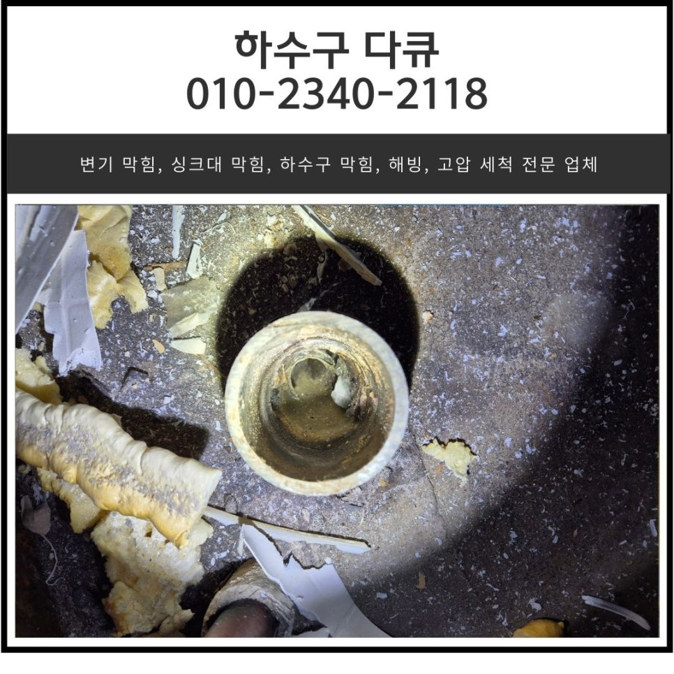
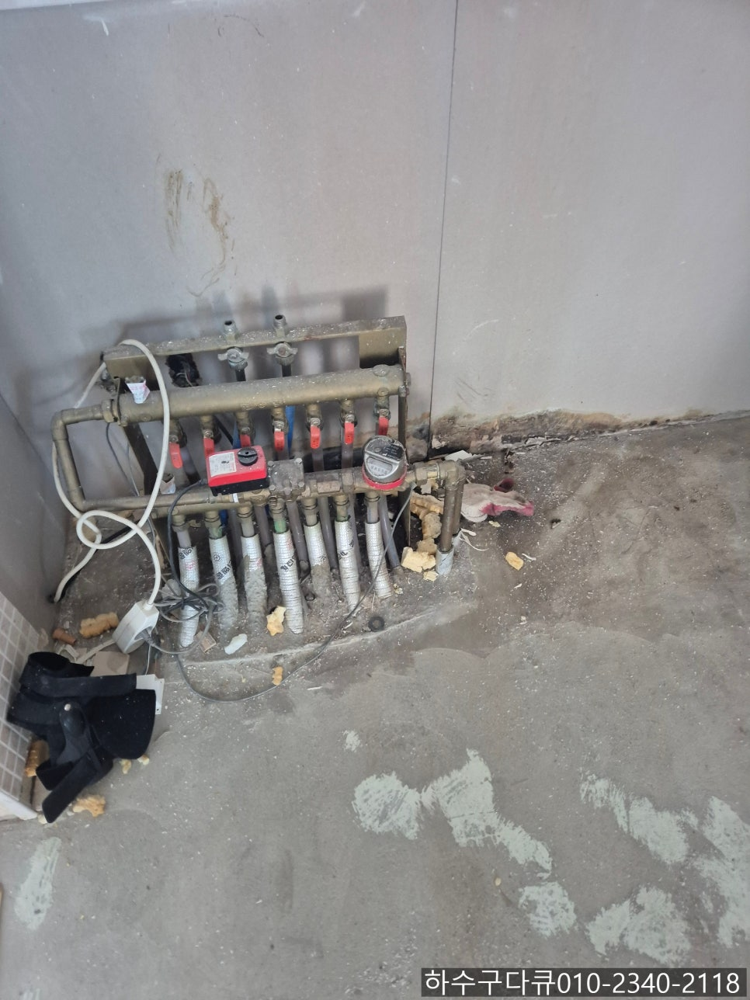
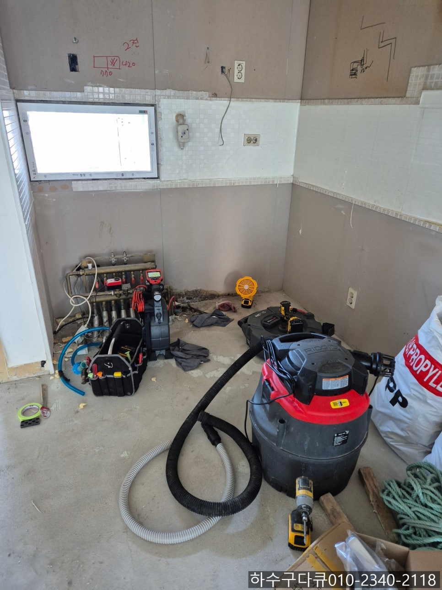
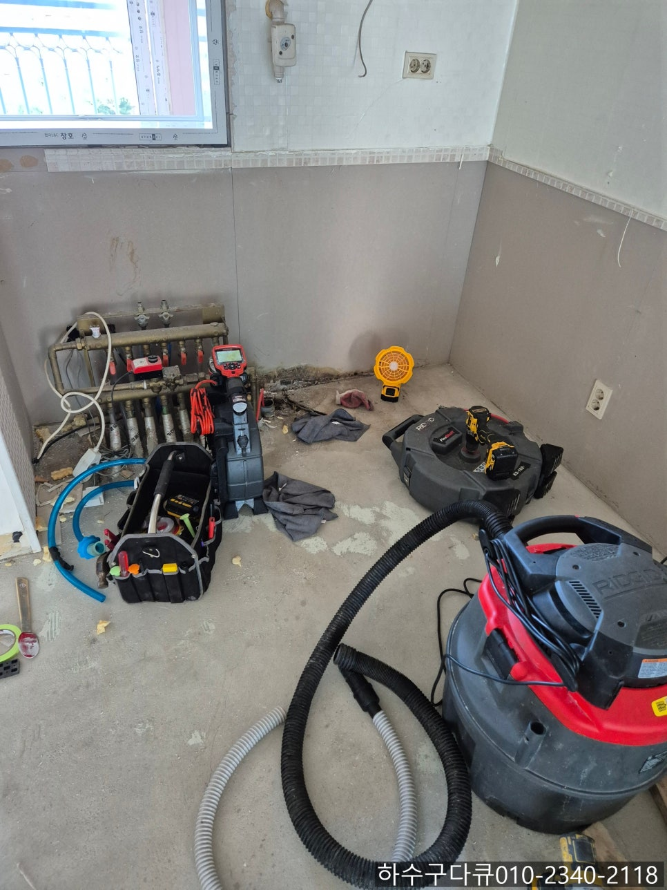
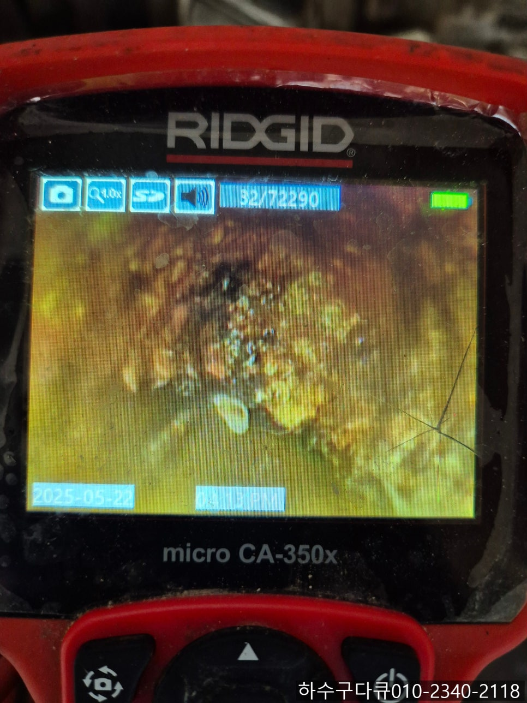
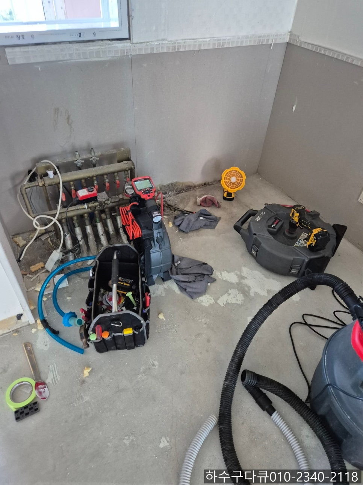
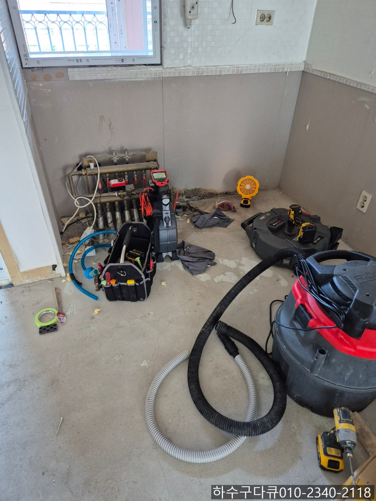

🏠 갈곶동 싱크대 막힘 오산 청호동 화장실 하수구 역류 배관 전문 설비 업체
오산 갈곶동 싱크대막힘 전문 시공 후기

📋 작업 개요
- 위치: 오산 갈곶동, 갈곶동, 오산
- 서비스 유형: 싱크대막힘, 하수구막힘, 배관막힘, 역류해결, 배관청소, 설비공사
- 작업 일시: 2025. 5. 26. 21:41
- 업체명: 하수구수사대 (010-5615-2118)
🔍 문제 상황
안녕하세요.
갈곶동 싱크대 막힘, 오산 청호동 화장실 하수구 역류 배관 전문 설비 업체 하수구 다큐입니다.
오늘도 어디선가 막힌 하수구로 스트레스받고 계시는 분들을 위해 갈곶동 싱크대 막힘 전문 업체 하수구 다큐가 다녀온 현장을 소개해 드릴게요.
이번 작업은 오산에 위치한 갈곶동 싱크대 막힘 현장인데요.
새로 집을 계약하시고 잔금을 치르신 다음 전체 리모델링을 진행하고 계셨어요.
결혼하시고 처음 내 집 장만하셔서 애정을 갖고 인테리어를 하는데 사장님께서 아파트가 노후되었다 보니 배관 청소도 같이 진행하는 게 좋다고 조언해 주셨다고 해요.

🔎 원인 분석
💡 전문가 진단: 정밀 진단 장비를 사용하여 슬러지의 고착 여부를 판명하고 타격/세척 작업을 실시했습니다.
아무래도 깨끗하게 인테리어를 했는데 싱크대나 화장실 세탁실 하수구 막힘으로 인해 역류가 발생한다면 주방 바닥, 세탁실 등 오염될 수 있다 보니 말씀해 주셨던 것 같습니다.
고객님께서는 오산 청호동 화장실 하수구 역류 배관 전문 설비 업체 하수구 다큐로 전화를 주셔서, 인테리어를 하는 중인데 배관을 모두 점검하고 청소해 줄 수 있는지 물어보셨어요.
오산 청호동 화장실 하수구 역류 배관 전문 설비 업체 하수구 다큐는 당장이라도 달려가서 작업을 하고 싶었지만 인테리어를 하다 보면 먼지도 날리고 간혹 자재들을 실수로 빠트려 막히는 경우도 있기 때문에 인테리어 과정 중 큰 공사라도 끝낸 다음 배관 청소를 진행하는 게 좋다고 말씀드렸습니다.
며칠 뒤 다시 고객님께서 큰 공사는 끝났다고 방문해서 배관 청소를 해달라고 요청하셨어요.
오산 청호동 화장실 하수구 역류 배관 전문 설비 업체 하수구 다큐는 필요한 장비를 챙겨 현장으로 방문해 드렸어요.
우선 고객님께서 가장 걱정하시는 싱크대 배관 내부 먼저 내시경 카메라를 이용해 점검해 보기로 했습니다.

🔧 작업 과정
내시경 카메라가 배관 내부로 진입하자 기름 슬러지로 꽉 막혀있는 것을 어렵지 않게 확인할 수 있었어요.
고객님도 옆에서 화면을 보시더니 깜짝 놀라시더라고요.
아마 이번에 고객님께서 배관 청소를 안 하셨다면 입주하시고 얼마 지나지 않아 싱크대 막힘이 발생했을 거예요.
우선 석션을 사용해 기름 슬러지를 빨아들이는 작업을 진행했지만 완벽하게 이물질이 제거되지 않아 상황을 말씀드린 다음 플렉스 샤프트 장비를 사용해 청소를 진행하기로 했습니다.
플렉스 샤프트 장비는 노즐이 배관 내부로 진입해 작업을 하게 되는데요.
노즐 끝에 달려있는 체인이 전동드릴의 빠르게 회전하는 힘을 전달받아 내부에서 회전하면서 기름 슬러지를 타격해 배관 내벽에서 떨어트려주는 역할을 합니다.
내시경 카메라를 이용해 배관을 꼼꼼하게 살펴보면서 플렉스 샤프트로 배관 청소를 반복해서 진행하자 깨끗해진 배관 내부를 확인할 수 있었습니다.
두 번째로는 화장실 바닥 하수구를 점검하기로 했어요.
화장실 바닥 배관의 경우 최근 막힘이 발생했던 건지 청소가 되어 있는 상태였습니다.


✅ 작업 완료
그래도 인테리어 과정에서 먼지가 들어간 건지 소량의 이물질이 확인되어 플렉스 샤프트를 이용해 추가로 작업을 진행해 드렸어요.
그 이후 사진을 남기지는 못했지만 세탁실 바닥까지 점검 후 이물질을 모두 제거해 드리고 작업을 마쳤습니다.
경기도 오산시 오산로160번길 15 201-L16호




⚠️ 주방 싱크대 배관 막힘 예방 수칙
- ✅ 기름기가 묻은 식기나 프라이팬은 설거지 전 키친타올로 반드시 기름때를 닦아내세요.
- ✅ 주기적으로 싱크대 개수대에 뜨거운 물을 가득 받아 한 번에 내려 배관 내부 기름을 씻어내세요.
- ✅ 배수구 거름망을 미세한 필터로 사용하시고 음식물 찌꺼기가 틈으로 새어 들지 않게 관리하세요.
- ✅ 베이킹소다와 식초를 뜨거운 물과 함께 일주일에 한 번씩 부어주면 배관 살균과 막힘 예방에 좋습니다.
💡 핵심 정리
- 확실한 장비 작업(내시경 점검 및 샤프트 스케일링)으로 원인을 뿌리 뽑습니다.
- 작업 후 1년 이내에 동일한 부위 재발 시 100% 무상 A/S 서비스를 보장합니다.
- 서울 · 경기 · 인천 전 지역에 24시간 언제든 긴급 출동할 수 있도록 항시 대기 중입니다.
❓ 자주 묻는 질문 (FAQ)
🚨 오산 갈곶동 싱크대막힘 문제로 고민이신가요?
정확한 원인 진단과 확실한 시공으로 재발 없는 해결을 약속드립니다.
24시간 긴급 출동 | 서울 · 경기 · 인천 전지역 | 1년 내 재발 시 무상 A/S